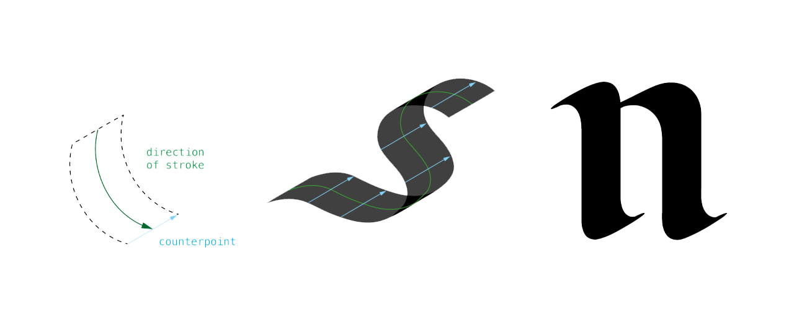
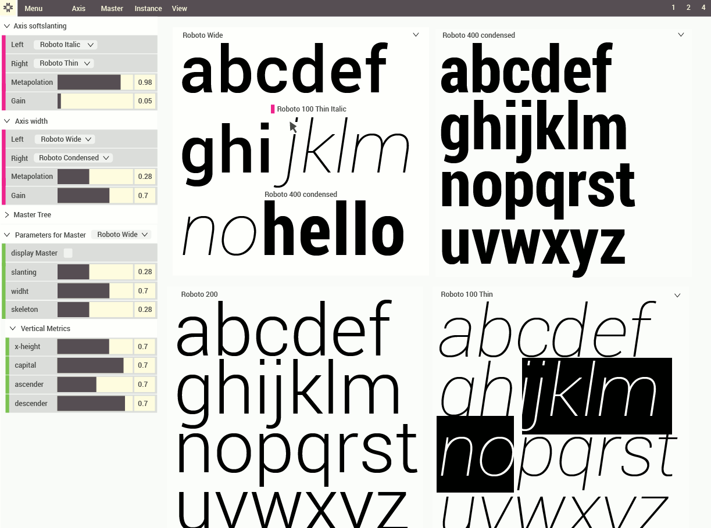
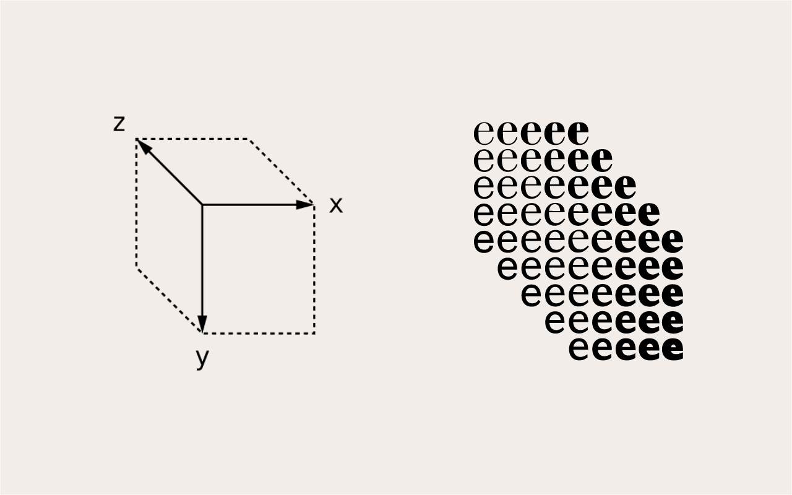
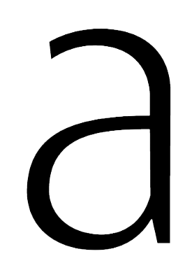

Metapolator turns any existing typeface into a skeleton font and lets users express themselves with a set of controls.
In the modern world typography is becoming more and more important in how we express ourselves. Typography has become and extension of who you are, not just through the words you choose, but also the way the typography can express an emotional connection to the words chosen.
Today, billions of people need fonts that are custom designed for themselves and their businesses.
With the new Metapolator platform all font lovers, from children to professional type designer, can create unique typefaces within large font families by using existing fonts and controlling it with simple adjustment tools.
Type designers need a toolbox to build a single typeface out into a
family of styles. Metapolator provides an initial set of tools for
common processes, but it is fully extendable.
spacing (tighter or looser)
weight (regular to bold, or to light)
width (normal to narrow, or extended)
x-height (increased or decreased, without distortions)
Workflow
Type designers need tools that snap into their existing workflow.
You can load any existing typeface and change it to your needs.
Standard
The text-based and interchangeable UFO source format has become an
industry standard.
Metapolator imports and exports UFO fonts, to add a new link in the
chain of font style and family creation. Curve and parameter
calculation is using Metafont, a standard in LaTeX and mathematical
typesetting since 1977.
As a web app it is built with an industry standard too: AngularJS.
If you can name it you can control it.
The core principle of Metapolator: A typeface is a system of shapes
and by naming the parts they can be parametrised.
Fonts can be seen as a system made out of parts and therefore
we can parameterise these parts.
How is it possible to keep a clear view of a parameterised letter shape?
The Metapolator solution is to make a clone of the original and
only add a specific parameter value to each copy.
Instead of constantly turning on and off parameter values for one
single font, we define a set for two fonts and invented the
metapolation parameter, which would simply travel inbetween the sets
of font A and font B.
We can also think of a cross fader to mix 2 turntables.
Interpolation vs Metapolation.
Cell replication with Metapolator:
When we start using one single font, we can extrapolate to a 2nd
replica by calculating a skeleton from the glyph outline. From the
skeleton to the original outline, we can create new inter- and
extrapolations.
We create new instances from masters. An instance is the position
inbetween 2 or many master fonts. Also, masters can be created from instances.
As soon we have more than one master we can create children and
siblings. The replication is not limited to Latin alphabets. In upcoming versions, a Hindi font can be created out of a Latin style, by translating parameters from one source to another.
From control points to pen strokes.

We believe type design should always be in the hand of the
designer. Metapolator is NOT drawing you a shape out of nothing.
Control points AND skeletons can be accessed and interpolated in
Metapolator, same as composits, anchor points and kerning values.
If we read the points of an outline in pairs, means always
a left and an opposite right point, then you have control over the
stroke and skeleton, means you don't need to define control points.
Modularity.


Metapolators modular design allows the user to create unlimited
amount of axes and link unlimited masters to create complex
interpolation environments.
We believe in modular synthesizers, (again here we draw a
connection to the world of music production) which means we can use a
stack of modules (or masters in our case) and link them in all
possible ways.
Metapolator lets you construct your very own Noordzij cube.
Effecting the outline is bad, effecting the skeleton is awesome.

creating masters from instances
duplicating masters
positioning vector points
loading 2 axes and unlimited masters
control point mode
pen mode
storage of projects
loading ufos, generating otf, ttf and new ufos
parameterisation of outline in pen mode
various metafont parameters available:
tension, shifting, slanting, serifs, vertical metrics like changing x-heigth
stroke (pen) width, glyph width, glyph spacing, font size,
stroke direction, stroke angle
Command line tool:
interpolation, extrapolation
interpolation of kerning
defining unlimited axes, using unlimited masters
create 1:1 replica from original source
1
3rd of April
Presentation Talk at LGM leipzig, Germany.
2
7th of May
Seminar at Atelier National Research Typographic Nancy, France.
3
14th of June
Tag der Schrift, Zurich, Switzerland
Day one
Launching a beta version for users to test and explore.
Day two
Inviting type designers around the world to contribute.